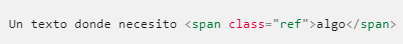
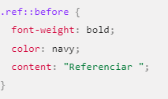
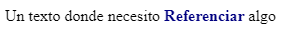

Este artículo describe algunas formas en las que puedes usar CSS para agregar contenido cuando se muestra un documento. Modificas tu hoja de estilo para agregar contenido de texto o imágenes. Una de las ventajas importantes de CSS es que te ayuda a separar el estilo de un documento de su contenido. Sin embargo, hay situaciones en las que tiene sentido especificar cierto contenido como parte de la hoja de estilo, no como parte del documento. Puede especificar contenido de texto o imagen dentro de una hoja de estilo cuando ese contenido está estrechamente vinculado a la estructura del documento. CSS puede insertar contenido de texto antes o después de un elemento. Para especificar esto, cree una regla y agregue ::before o ::after al selector. En la declaración, especifique la propiedad content con el contenido del texto como su valor.
HTML
CSS
Resultado
